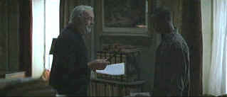

| Finding Forrester/B+,B+ |
| Columbia/2000/136/ANA 2.35 |
I was very impressed by Finding Forrester
in its theatrical run. Watching it again on DVD provided equal
pleasure. It's a clever concept providing many dramatic and humorous possibilities. The relationship between the young black man and the
aging hermit writing legend plays out with humor and sagacity.
Set in the Bronx near Yankee Stadium, the urban street sense smells right. Those
pick-up basketball games played with intensity under the gaze of the mysterious Forrester ease into
the mystery of the man with the glasses.
 |
| Setting a Forrester fire. ©Columbia |
Jamal is a young black man struggling to find his way through the ghetto.
Jamal is smart; often too smart for his surroundings. If he doesn't have a basketball in his hands
he's reading a book or making notes in his voluminous journals. An idle challenge leads him to a
fateful meeting with neighborhood recluse William Forrester. At the same time, basketball and
brain get him an audition at an elite high school. The best scenes
feature the verbal banter of Forrester and Jamal. Their relationship evolves bringing a sense of
purpose to each of them.
Watching Sean Connery unraveling the emotions of the white haired
unpredictably cantankerous writer William
Forrester is
a joy. Connery brings incredible conviction to his dialogue, letting roll off his lips with
consummate ease. Forrester displays an interesting range of emotions and Connery never falls short
in finding the right vocal or visual nuance to discover the truth of the moment. Rob Brown is remarkable as Jamal. It’s his first
acting gig and he’s natural and unafraid. I think the role was a great fit. And he holds his own in the shadow of great Sean Connery just as Jamal
Wallace stands tall alongside William Forrester. Anna Paquin does some nice work as rebellious
preppie Claire Spence. F. Murray Abraham has a tougher job in dealing with the black and white
character of arrogant teacher and failed author Robert Crawford.
Mike Rich, the Portland talk
show host and film critic did a terrific job writing Finding Forrester. Elements of the
material are manipulative, but with a tougher director, those moments might have worked better. Gus Van
Sant was okay as the director, but I don’t think he was especially sensitive
to the material and some of the scenes would have played better from another
director.
A handsome DVD that is faithful to the original material. Cold palette used
by director Van Sant did not look spectacular in the theaters and the DVD suffers from the same
mediocre visual treatment. Colors are accurate with good saturation. Some peak transition ringing shows
up from time to time. Good contrast range and black level. Excellent shadow detail allows for
revealing dark scenes. The edges of the Bronx buildings are stable and the skies are not
overly grainy. Overall detail is very good. Dolby Digital 5:1 surround is nicely recorded with
ambient details well-located.
An HBO making of featurette and a short tracing the casting of Rob Brown, a
couple of deleted choir scenes, and a quartet of theatrical trailers including Finding Forrester
complete the package.


DVD Easter Eggs
How do you take them? Fried or scrambled. Get the secrets
here.

The Cinema Laser
A home grown magazine for laserphiles that has been publishing for a number of years and has
embraced DVD in a big way. Lots of helpful information.
DVD retailer of Canadian and US domestic releases.

An on-line Home Theater magazine with excellent hardware reviews,
including thorough and responsible research. Check it out.

Selections from the Feature Archive include articles on
Akira Kurosawa, Blonde Bimbos,
Frank
Darabont, Steven Culp,
John
Herzfeld or Vietnam: The
Hollywood Pariah, and many more....
Director Walks the Wire
Balanced by an armor of movie lore and filmmaking daring, director John Herzfeld is comfortable
walking the high wire. Check out this interview by Stu Kobak.